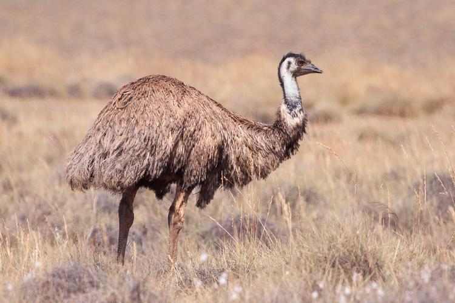
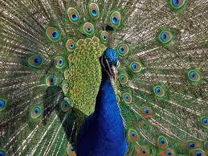

Tragopan modrolicy, tragopan Temmincka (Tragopan temminckii) – gatunek ptaka z rodziny kurowatych (Phasianidae), zamieszkujący południowo-wschodnią i wschodnią Azję. Jeden z pięciu gatunków tragopanów, popularny ptak hodowlany. Nie wyróżnia się podgatunków.

Emu (Dromaiinae) – monotypowa podrodzina ptaków z rodziny kazuarowatych (Casuariidae).

Miedzianka szmaragdowa (Chalcophaps indica) – gatunek średniej wielkości ptaka z rodziny gołębiowatych, podrodziny treronów. Występuje na subkontynencie indyjskim, w Azji Południowo-Wschodniej oraz Australii wraz z kilkoma wyspami Oceanii (przyjmując ujęcie systematyczne, w którym do tego gatunku włączana jest miedzianka brązowogłowa

Paw indyjski, paw niebieski, paw zwyczajny (Pavo cristatus) – gatunek dużego ptaka grzebiącego z rodziny kurowatych (Phasianidae). W naturze występuje na subkontynencie indyjskim, został introdukowany również w inne miejsca na świecie. Jako ptak hodowlany często spotykany w kolekcjach na całym świecie. W hinduiźmie jest świętym ptakiem. Gatunek monotypowy.

Puchacz wirginijski (Bubo virginianus) – gatunek dużego ptaka z rodziny puszczykowatych (Strigidae), zamieszkujący Amerykę Północną i Południową. Teren lęgowy sięga od północnej granicy lasu na Alasce i w Kanadzie, przez Stany Zjednoczone, Meksyk, kraje Ameryki Centralnej. W Ameryce Południowej występuje na terytorium wszystkich państw

Turak zielonoczuby (Tauraco persa) – gatunek średniej wielkości ptaka z rodziny turakowatych (Musophagidae), występującego w Zachodniej i Środkowej Afryce, głównie wzdłuż wybrzeża Zatoki Gwinejskiej. Zamieszkuje lasy od Senegalu na zachodzie, poprzez m.in. Wybrzeże Kości Słoniowej, Nigerię i Kamerun po Gabon, Kongo, Demokratyczną Republikę Konga i północną Angolę na wschodzie i południu.